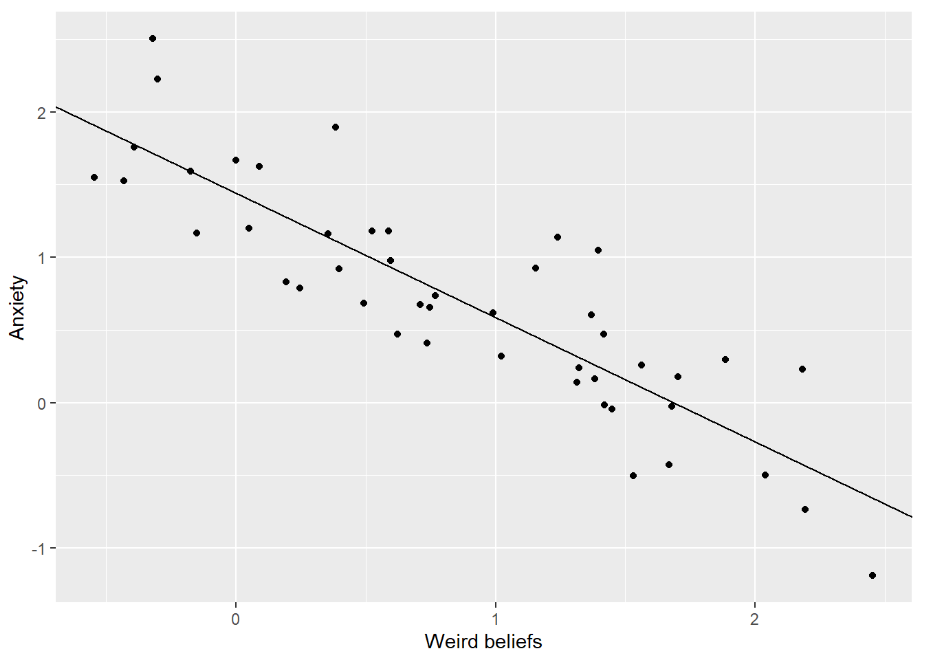
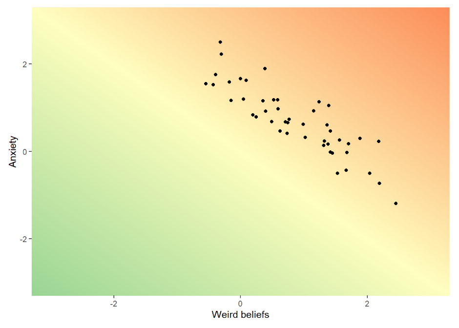
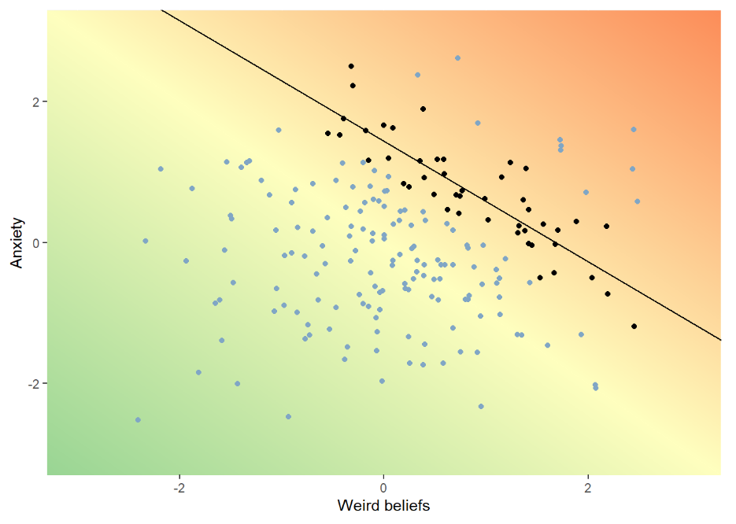
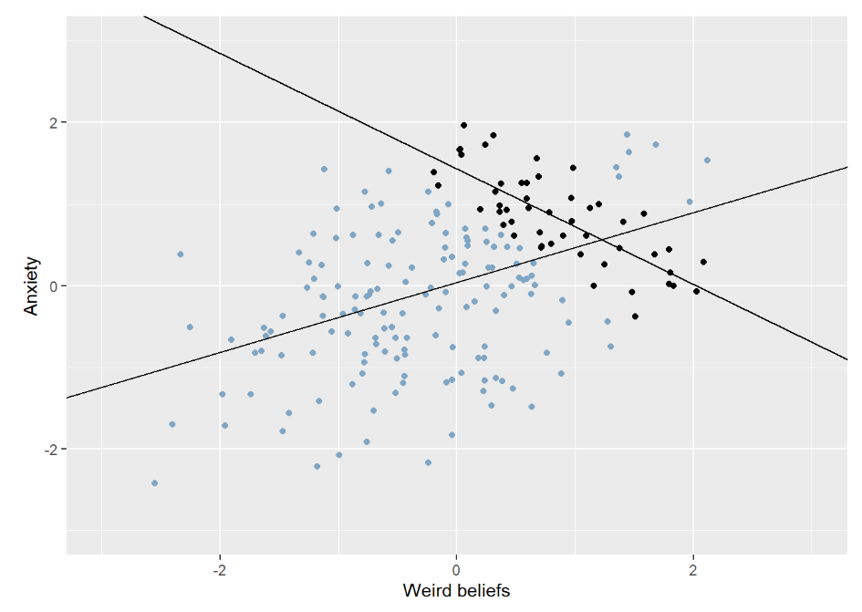

Oh No! Berkson’s paradox in clinical theories
Let’s start with a story.
Mike works as a clinical psychologist at a general psychiatric outpatient clinic. The people Mike sees have a wide range of issues, but all of them have real problems. Unemployment, broken relationships, loneliness, wasted potential, and usually a heavy mix of anxiety and hopelessness. In other words, mental illness, with all that comes with it. The word used among Mike’s colleagues is usually functional impairment, but he prefers to just think of misery.
The people Mike assess and treat are almost always referred from a primary care physician who believes this person needs specialized care. Sometimes the clinic gets a referral with a patient that isn’t really that impaired - some primary care doctors don’t know that much about psychiatry. In those cases Mike’s doctor colleagues send them somewhere else before he, or someone like him, even sees them.
Mike is a clever man, he’s good at spotting patterns. But he’s also careful. Humans in general are “pattern matchers”, and he knows this. We overfit our models. We see faces in clouds and rocks. After four heads in a row we think there’s bound to be a tail.
Lately, however, Mike is becoming more and more confident in a certain pattern. He’s even starting to become confident in his theory as to why the pattern arises. He has noticed a trade-off between two types of mental processes - excitingly two things that aren’t trivially related. Some people he meets have a bit of a loose grip on reality, more than others. They usually have “weird beliefs”, supernatural stuff, stuff about fate, alternative theories. Nothing psychotic, in his experience, but perhaps “schizotypal”. Other people are really Anxious. Interestingly the people that are more anxious seem to have a more realistic view of the world, and conversely people who have more weird1 spiritual beliefs about fate and the universe and how everything is connected seem to be less anxious.
Maybe these beliefs and this style of thinking protects against anxiety? Maybe detaching yourself from the real world, giving yourself space to think more freely and openly guards you against the pain of reality. Since Mike is aware that the human mind often finds illusory correlations he instead chooses to gather data on his patients via other clinicians, blind to his theory. He explains his ideas of anxiousness and supernatural/weird beliefs and lets his colleagues get calibrated in scoring imaginary patient cases. Then they rate the patients they meet on these scales and hand the data to Mike.
When the data has been collected the correlation is clearly visible and significant even at his relatively small sample! Heureka!

It really makes sense doesn’t it? Most of the people he meets at the clinic live lives full of real tangible problems. Taking a step away from reality is bound to protect emotionally against that, at least a bit. Meanwhile having a realistic outlook on your marginalized situation is bound to fill you with some anxiety. The mental processes that lead to “weird beliefs” do seem to come with their own problems, sometimes conflicts with others, or trouble with goal oriented behaviour. But this may be a small price to pay for some peace of mind.
Oh no…
You know we were getting to this. His selection of patients is conditioned. In this example our psychologist isn’t falling victim to some “illusory correlation”. He’s not seeing a relationship where none exist. In his data-set the correlation really is quite strong. What he misses is why it exists.
Let’s say “weird beliefs” are bad for your level of “functional impairment” in a simple linear way. The more weird beliefs the more impairment.
Let’s assume that anxiety is also bad for your functioning (it is). Adding these together we have impairment = anxiety + weird beliefs. So with one unit of anxiety and five units of “weird beliefs” you have six units of impairment.
We can draw it like a gradient to make it really clear. The x and y axes represent weird beliefs and anxiety levels. Redder colour means more functional impairment.

At Mikes clinic, people who are not impaired enough don’t need to seek professional help at a clinic, or are sent elsewhere by whoever screens the referrals. Additionally, people who are in an acute crisis may be sent to even more specialized clinics, even inpatient care.
The effect is that Mike’s patients exist in a limited range of functional impairment. Meanwhile if we were to look at a larger random sample of the population we see that there’s no relationship between anxiety and weird beliefs.

I remind you that this is simulated data. Indeed, the paradoxiest2 part of Berkson’s paradox is that it can even reverse the direction of a correlation. Generally in psychiatry negative things are correlated, both for psychological reasons (for example negative emotions causing sleep issues) and for practical reasons (for example a depression having a negative impact on your financial security) and perhaps even for biological reason (there are positive genetic correlations between many different disorders). This has led to some researchers suggesting there’s a general factor of psychopathology3. But even in those conditions, where there’s a positive correlation between the traits we look at, we can get a reversed correlation given the right selection effect:

Is this common? Does this happen?
In my experience the culture in clinical psychology can be a bit contradictory. On one hand our education teaches us to be very sceptical. We’re taught to be careful not to make scientifically unwarranted claims. We’re taught to be suspicious of simplifications. Aware of unknown confounders. All that jazz. At the same time psychology often reveres clinical intuition. From a scientific point of view we often don’t know more than the fact that a bunch of questionnaires are internally consistent and correlate with each other in this and that way. Meanwhile in the land of clinical experience we can imagine ourselves knowing with high precision exactly why someone has a symptom, given their personality, their defences, their context (depending on who you ask). I don’t want to come of as too negative about that. Maybe people really are too multifaceted for “reductionism”? At the very least I think people’s psychological intuitions are often based on a sound understanding of how other humans work. I’m a human living among humans, so that intuition should be based off good data at least.
The field of judgement and decision-making would have a lot to criticize about the above statement. They would point to our tendency to form bad intuitions in contexts where we can’t reasonably expect to form them, i.e. where feedback is delayed and noisy. Working as a therapist, unfortunately, is one such context. But in the story above that isn’t the problem. Even if you’re careful and well calibrated, you can’t make up for biased data. “Garbage in, garbage out” as we often say when it comes to meta-analyses and machine learning.
I don’t mean to argue that this particular mistake is necessarily super common. I really don’t know. But no doubt it’s easy for clinicians to make their own theories, see potential trade-offs or see how patients cluster into types. Worry as a defence against sadness. Externalizing symptoms as a way to not feel anxiety. I get that these theories have supporting literature and arguments that go deeper than simple observations, but situations we often find ourselves in as clinicians may make these theories feel convincing for the wrong reasons.
And I think this potential pattern is important to be aware of in a bunch of different contexts. For example you could imagine teachers at some sort of prestigious private school seeing a trade-off between being good at math and good at writing, in a way that makes them buy into questionable research about learning styles. Instead the pattern is because students get in to the school based on a sum of their grades, some more language-related, some more math-related. The same teachers could also plausibly spot false negative relationships between learning fast and being industrious (“they’re smart so they don’t have to learn any study-strategies”). Life is full of unrepresentative samples.
Basically you always need to think about where your sample comes from, and if the reason your subjects get sampled could plausibly be related to the variables you’re looking at you need to be careful what you conclude. And it’s worthwhile to remember that even if you’re well calibrated and careful, there’s a good reason that scientific research has a higher status than your individual observations.